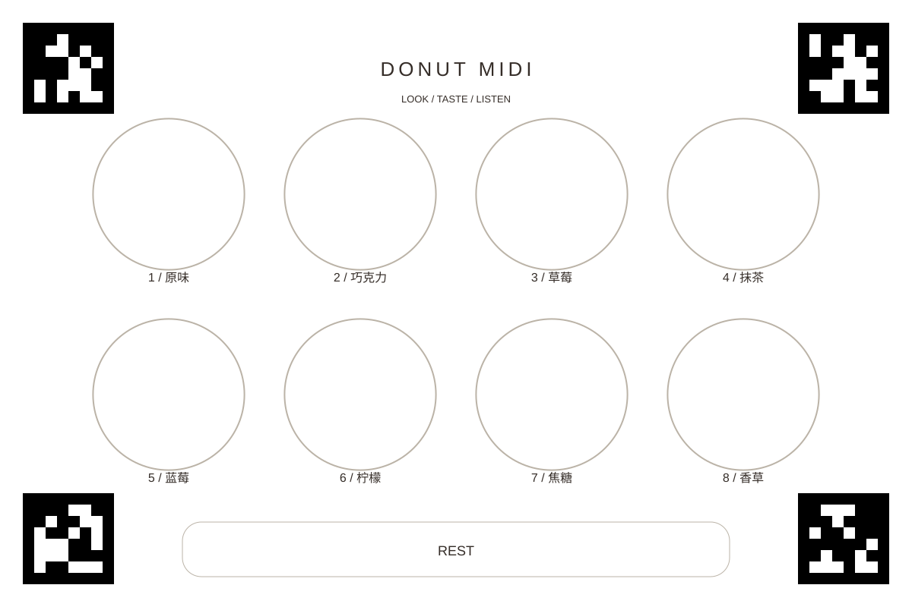

BUILD & LEARN / 制作与学习
理解每一个音，
如何发生。
从一张带标记的桌垫，到属于你的声音映射。
一条可看懂的信号路径。
场景 + 匹配注视→Python 桥接
AprilTag 平面定位→网页交互
停留 / 阶段 / 参考值→Web Audio
音符与音色
桥接使用官方 Python 客户端获取匹配场景与注视样本，将场景坐标映射到桌垫归一化坐标，向本机网页发送数值。它不保存或向网页传输相机画面，也不主动启动 Neon 录像。Companion 自身的录制与上传设置需另行管理。
一张桌垫，三个固定区域。


- 图面 420 × 280 mm，比例 1.5:1。建议 A3 横向、哑光纸、保持比例；页面可能留白。
- 可整体等比缩放；不可单独移动、旋转、缩放或裁掉标记。ID 0 左上、1 右上、2 右下、3 左下。
- 保持四个 AprilTag 36h11 全部在场景相机内，避免餐具遮挡。移走食物不影响区域定义；“吃完”需要手动标记。
- 每次演奏前看三个圆心检查定位。平面映射没有镜头畸变矫正和食物高度补偿；高餐具、边缘和斜视可能产生误差。
修改桌垫几何时，应同时修改 bridge/surface.py、bridge/generate_mat.py 与 core.js 的区域定义，并重新验证。只改外观时也必须保留标记位置和编码。
从身体输入，到创作规则。
注视 → 音符
三个区域中心为 (0.23, 0.43)、(0.50, 0.43)、(0.77, 0.43)，默认 C4 / E4 / G4。停留 500 ms 触发一次，持续停留不会反复发音；离开、区域切换或失效会重新计时。停留阈值可调 250–1500 ms。休止区可使声音衰减。
瞳孔 → 音色
有效左右瞳孔取平均，仅一眼有效时使用该眼。相对个人参考值的变化经过平滑，映射到低通滤波器明亮度或轻微颤音，并受调制强度控制。实时模式先采集 15 秒参考值；样本不足时不会启用身体调制。短暂缺失后回到中性音色。
品尝 → 时间结构
观看／余味允许新选音。品尝延续最后一音、暂停新选音。准备／结束让声音释放。“吃完了”手动移除对应声部，可撤销；没有自动咀嚼或食物识别。
三轮小型工作坊。
选择“注视版”，关闭身体调制。先改变三个音高，再比较短停留与长停留。讨论：什么样的规则更容易有意演奏？
选择“身体版”。模拟组拖动滑块；设备组先检查定位并采集参考值。对比同一音高下的音色变化，描述听感，避免把数据解释为情绪。
比较明亮度和颤音，调整强度，编排观看→品尝→余味→结束。可由同伴操作阶段和“吃完”，投影视图用于共同聆听。
无设备组持续使用模拟或回放；设备组轮流佩戴，每位参与者重新采集参考值。需要记录时先说明用途并取得同意。
数据留在这一页，直到你导出。
记录默认关闭。勾选“已说明用途并获得记录同意”后，点击开始记录；切换来源或取消同意会停止记录。停止后导出 JSON 到浏览器下载位置。未导出记录仅在内存中，刷新或关闭会丢失；下一次停止记录会替换上一份待导出记录。无账户、无云端上传，不记录姓名、音频和视频。
| 字段 | 含义 |
|---|---|
schema | 固定为 donut-song/1，保留兼容。 |
source / initial | 输入来源（simulate / live）、初始映射、阶段与参考值。 |
samples | 相对毫秒时间、桌垫坐标、左右瞳孔 mm、有效性、设备秒时间戳、场景坐标、参考值、平滑值、阶段与消耗状态。 |
events | 音符、阶段、映射修改、吃完／撤销、声音开关和人工时刻标记。 |
浏览器约 30 Hz 采样，可能重复或丢失设备样本。M 键或“标记时刻”添加节点。模拟记录明确标注 simulate；内置示例标注 synthetic-demo，均不可当作参与者数据。
导入后恢复输入、阶段、参考值和消耗状态，使用当前声音映射重新配乐。不会自动应用旧映射修改事件，事件保留供检查。最多一小时／108000 样本，文件上限 100 MB；异常格式会拒绝导入。
常见问题
为什么看着甜甜圈却没有新声音？
检查是否开启声音、处于观看／余味、区域尚未吃完。持续停留只触发一次，先移开再回来。实时模式还需要新鲜有效注视与全部标记。
为什么没有声音？
点击开启声音，检查主音量、系统输出与静音状态。品尝前需要先选过一个音。切到其他标签页会释放声音，回放会暂停。
为什么公开网站连不上 Neon？
桥接仅接收本机 HTTP 来源；从本地启动网页再连接。浏览器本地网络权限与混合内容策略也可能限制跨来源访问。见连接教程。
它会识别甜甜圈或自动判断吃完吗？
不会。它识别四个 AprilTag 定义的平面，并映射固定区域。品尝阶段和吃完由人工操作。
可以导出音频或热图吗？
当前只有 JSON 导出与重新配乐回放，没有音频导出、热图、高级分析或完整视频回访。
保持清楚的验证边界。
实时流匹配场景帧率，通常约 30 Hz，不是完整 200 Hz 科研眼动记录，不适合精密扫视／凝视检测。无统一外部时钟同步，也没有长期数据管理。
已有自动测试覆盖停留、瞳孔有效性、回放校验、音频节点调度、合成透视定位、遮挡失效、SDK 接口与本机 WebSocket 来源限制。
Neon 发现、手机与 Companion 兼容性、真实码流和瞳孔、食物高度与真实打印定位误差、佩戴舒适度、声音听感与端到端延迟，尚未完成现场联调。它是工作坊原型，不是已验证的科研测量系统。